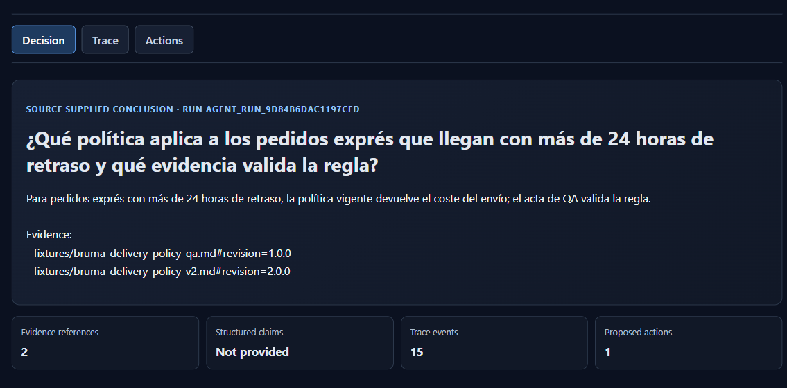
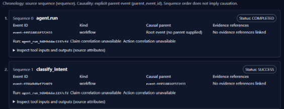
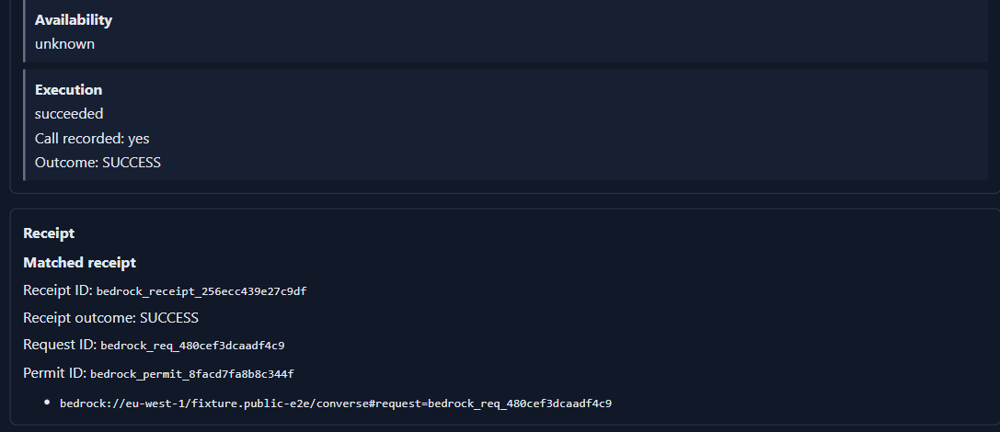
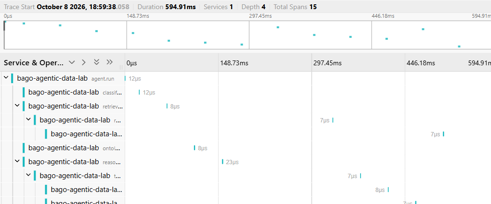

DOCUMENTACIÓNdocs/decision-inspector dentro del repositorio
Cómo usar este manual. Lee, observa, practica y verifica antes de avanzar.
Aviso. La interfaz es de solo lectura: no aprueba ni ejecuta acciones.
LECCIÓN 01 · OBSERVAR
Leer la decisión
Abre http://127.0.0.1:8082. La primera vista resume una ejecución real. Anota el Run ID para saber qué ejecución estás mirando.
Los contadores muestran cuánta evidencia recuperó la ejecución, si hay claims estructurados, cuántos eventos de traza llegaron y cuántas acciones aparecen.
CAPTURA ORIGINAL · RECORTE AMPLIADODECISION · RESPUESTA Y REFERENCIAS

Vista Decision: captura real, recortada al resumen de ejecución, evidencias y claims disponibles.
Cómo interpretar esta pantalla
01
La respuesta es el texto producido por la ejecución.
02
Una referencia recuperada es un documento consultado; no demuestra por sí sola que apoye una frase concreta.
03
“Structured claims: Not provided” significa que la fuente no separó la respuesta en afirmaciones verificables.
04
Si falta el vínculo claim→evidencia, el Inspector lo deja indicado. No inventa la relación.
PRÁCTICA DEL ALUMNOOBSERVA · NO DEDUZCAS
LECCIÓN 02 · SEGUIR
Leer la cronología
Selecciona Trace en la barra superior. Cada tarjeta representa un evento de LocalTrace. El número de secuencia indica el orden. La relación padre solo expresa causalidad cuando la fuente la registró.
CAPTURA ORIGINAL · RECORTE AMPLIADOTRACE · EVENTOS EN SECUENCIA

Vista Trace: primeros eventos de la cronología LocalTrace, recorte de la captura auténtica.
Tres identificadores
run_id
identifica la ejecución del agente.
LocalTrace trace_id
identifica el registro local de eventos.
Jaeger trace ID
identifica la traza que Jaeger indexó. En esta validación: 04b58bb123bb6cc94a8cc0d60c7145ae.
AVISO · NO CONFUNDIR IDENTIFICADORES
La pantalla dice que no hay correlación directa con Jaeger en este payload. El grafo existe, pero el Inspector no tiene un enlace automático entre ambos IDs.
REGISTRA TUS IDENTIFICADORESEVITA SUPONER CORRELACIONES
LECCIÓN 03 · COMPROBAR
Revisar acciones y recibos
Selecciona Actions. Lee los estados de arriba abajo: capacidad, elegibilidad, autorización, disponibilidad, ejecución y recibo. Cada uno responde a una pregunta distinta.
CAPTURA ORIGINAL · RECORTE AMPLIADOACTIONS · RESULTADO Y RECIBO

Vista Actions: recorte real del bloque de ejecución y recibo; el original conserva la escalera de autorización completa.
Regla práctica
01
Una propuesta dice qué se podría hacer. No significa que esté autorizado.
02
Una autorización no demuestra que la acción se ejecutó.
03
Para confirmar ejecución hace falta un recibo asociado a la misma ejecución.
04
Si al recibo le falta run_id o pertenece a otro run, no se acepta como éxito verificado.
EJEMPLO
Ejemplo: “SUCCESS” sin un recibo válido se muestra como “unverified”.
COMPROBACIÓN DEL RECIBOEL RECIBO MANDA
¿Coinciden? □ Sí□ No□ No consta
LECCIÓN 04 · LOCALIZAR
Encontrar el grafo en Jaeger
Abre http://localhost:16686. Es otra pantalla: busca y dibuja los spans que recibió el colector local.
BÚSQUEDA DIRECTA
Búsqueda directa: pega 04b58bb123bb6cc94a8cc0d60c7145ae en “Lookup by Trace ID”.
BÚSQUEDA POR SERVICIO
Búsqueda por servicio: elige bago-agentic-data-lab, selecciona agent.run y pulsa Find Traces.
CAPTURA ORIGINAL · RECORTE AMPLIADOJAEGER · TIMELINE DE SPANS

Captura real de la traza local en Jaeger (recorte de la línea temporal). La imagen completa se conserva en el paquete.
Qué demuestra este grafo
01
Jaeger encontró la traza local.
02
Se enviaron 15 spans y Jaeger observó 15.
03
Los nodos son spans; las flechas muestran su relación en la traza.
04
Esto no demuestra envío a AWS ni a un colector remoto.
LOCALIZA LA TRAZADATOS QUE OBSERVAS
LECCIÓN 05 · PRACTICAR
Repetir el recorrido
La demostración registrada
LOCALTRACEOTLP/HTTPJAEGER
LocalTracetrace-5b385699ffda0529
→
Jaeger04b58bb123bb6cc94a8cc0d60c7145ae
15 enviados · 15 observados
LocalTrace trace-5b385699ffda0529 se proyectó por OTLP/HTTP a Jaeger. Jaeger encontró la traza 04b58bb123bb6cc94a8cc0d60c7145ae y observó sus 15 spans. El informe está en evidence/l15_otel_jaeger_live.md.
Repite la lectura
01
Abre el Inspector y anota Run ID.
02
Mira los contadores. Si claims dice “Not provided”, no hay claims estructurados.
03
Abre Trace; anota trace_id y revisa el orden y los avisos.
04
Abre Actions; comprueba el recibo y su run_id.
05
Abre Jaeger y busca el ID de Jaeger del informe. Una ejecución nueva tendrá IDs distintos.
06
Compara las operaciones y los spans encontrados.
CLAVE
Conclusión correcta: “Jaeger recibió y mostró esta traza local”. No afirmes que el Inspector enlaza automáticamente con Jaeger o que la traza llegó a AWS.
RESULTADO DE MI REPETICIÓNANOTA LO QUE HAS COMPROBADO